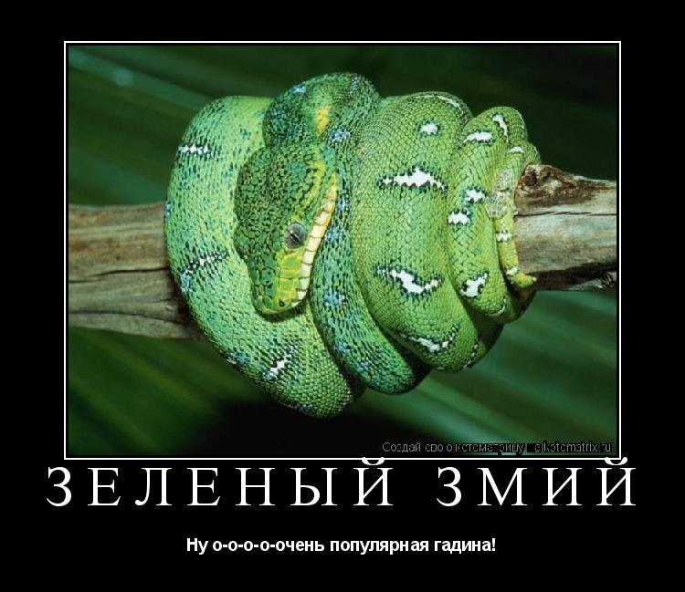
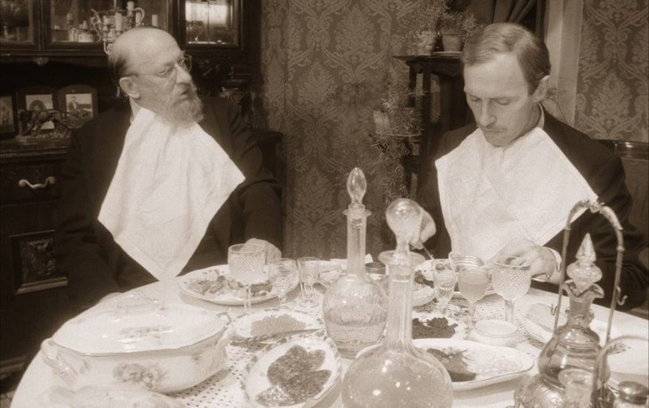

Я не буду вас агитировать совсем бросить пить. Более того, я как врач-психиатр знаю, как много сейчас у каждого человека стрессовых ситуаций. И порой лучше выпить рюмку коньяка, нежели горстями принимать транквилизаторы. Я расскажу вам, где проходит граница между просто употреблением спиртных напитков и алкоголизмом, как не преступить ту роковую черту, за которой тяжелая и трудно излечимая болезнь. Осознать собственное состояние – уже первый шаг к свободе от зависимости.
Знаю, как трудно решиться и пойти к наркологу. Надеюсь, что если вы прочтете эту книгу, то, возможно, к наркологу обращаться не придется. Давайте трезво все обсудим, а потом воспользуйтесь моими рекомендациями. Вы узнаете, как самостоятельно бросить пить, как помочь себе в состоянии похмелья, что делать, чтобы больше не срывывться, и найдете ответ на важный вопрос: может ли человек, многие годы злоупотребляющий алкоголем, научиться выпивать умеренно? Забегая вперед, отвечу: может.